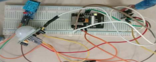

| Project Technical Profile | |
|---|---|
|
 Hardware Prototype: ESP32-CAM with PIR and DHT11
|
|
| Developers | Vishal R, Niteesh H D, Kavana Timmappa Naik, Subhash Hurakadli, Gayathri S, Anitha S Prasad |
| University | JSS Science and Technology University, Mysore |
| Core Board | ESP32-CAM Microcontroller |
| Sensor Array | PIR, DHT11, Vibration |
| Services | Telegram Bot, ThingSpeak Cloud |
The Low Cost IOT Based Smart Monitoring System is a multi-functional security and environmental monitoring platform. Developed using the ESP32-CAM, the system provides a robust yet affordable alternative to traditional surveillance. It is specifically designed to detect motion, capture visual evidence, and monitor environmental stability in home or industrial settings.
The system utilizes a Passive Infrared (PIR) sensor and a vibration sensor to monitor activity. When an intrusion is detected, the ESP32-CAM module is activated to capture a photograph of the subject. These images are transmitted securely over Wi-Fi to a designated Telegram Bot, providing the user with real-time visual alerts on their smartphone.
Simultaneously, the DHT11 sensor tracks temperature and humidity levels. This environmental data is uploaded to the ThingSpeak cloud platform, allowing for historical data analysis and remote climate monitoring from anywhere in the world.
Testing under laboratory conditions confirmed the system's reliability: